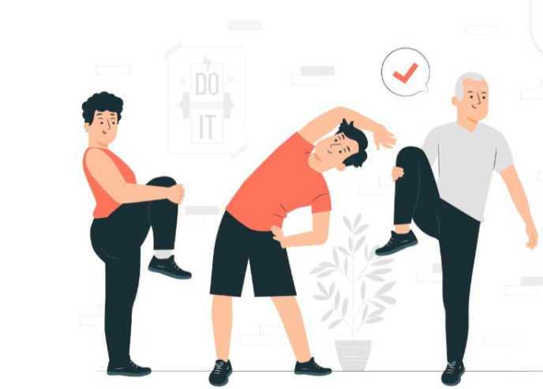

การออกกำลังกาย
การออกกำลังกายเป็นกิจกรรมที่ช่วยส่งเสริมสุขภาพและทำให้ร่างกายมีความแข็งแรง การออกกำลังกายอย่างเหมาะสมช่วยพัฒนาการทำงานของหัวใจและปอด ช่วยเสริมสร้างกล้ามเนื้อและกระดูก รวมถึงช่วยให้ร่างกายสามารถเคลื่อนไหวและทำกิจกรรมต่าง ๆ ได้อย่างมีประสิทธิภาพ นอกจากนี้การออกกำลังกายยังมีส่วนช่วยให้รู้สึกผ่อนคลายและลดความเครียดจากการเรียนหรือการทำงาน การออกกำลังกายมีหลายรูปแบบ เช่น การเดิน การวิ่ง การปั่นจักรยาน การว่ายน้ำ การเล่นกีฬา หรือการออกกำลังกายตามความสนใจของแต่ละบุคคล อย่างไรก็ตามควรเลือกกิจกรรมที่เหมาะสมกับอายุ ความสามารถ และสภาพร่างกายของตนเอง ไม่ควรหักโหมจนเกินไป เพราะอาจทำให้เกิดการบาดเจ็บได้ ก่อนออกกำลังกายควรเตรียมร่างกายด้วยการอบอุ่นร่างกาย และหลังออกกำลังกายควรผ่อนคลายร่างกายอย่างเหมาะสม รวมถึงดื่มน้ำให้เพียงพอ การออกกำลังกายอย่างสม่ำเสมอควรทำควบคู่กับการรับประทานอาหารที่มีประโยชน์และการพักผ่อนอย่างเพียงพอ เพื่อให้เกิดผลดีต่อสุขภาพในระยะยาว